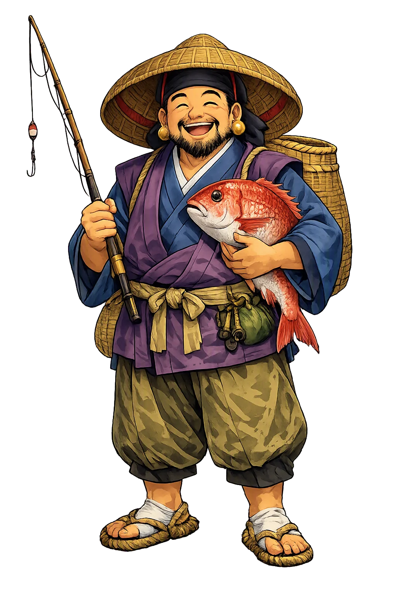
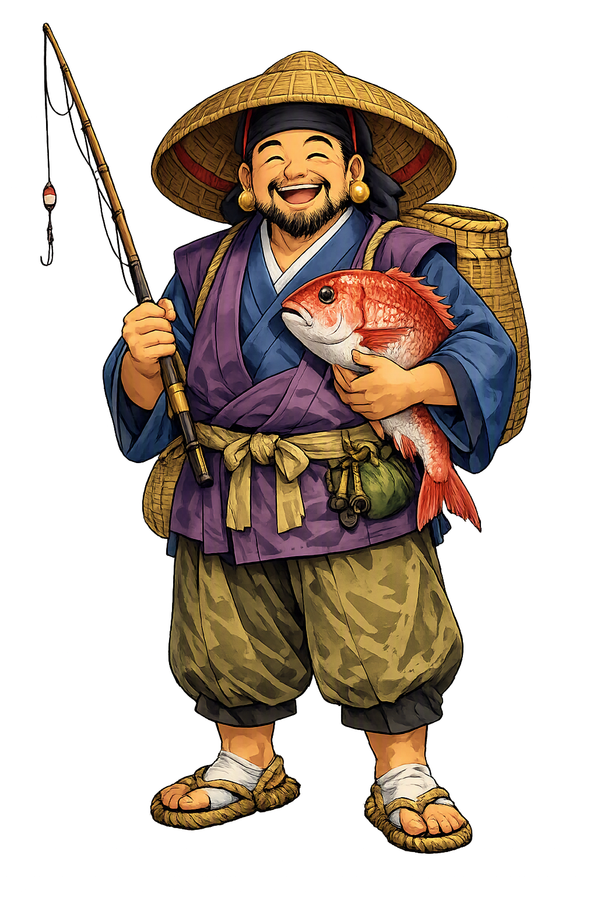

Stories of Ebisu
Ebisu has no single founding myth. He grew from several older figures — the castaway child Hiruko, the oracular Kotoshironushi, and deities of the foreign sea — into the cheerful merchant god of the Edo period. The sources disagree about which ancestor is truly his; the smile, the fishing rod, and the sea bream are the tradition's own answer.
The Kojiki tells that when Izanagi and Izanami first coupled, their child Hiruko was born 'without bones', like a leech or a premature thing; at three he could not yet stand. The dismayed parents set him adrift in a boat of reeds and let the sea decide. He survived — and later tradition, above all at Nishinomiya Shrine near Kōbe, identified the foundling with Ebisu: the child the gods abandoned who became the god of those who make their own living from the water. The chronicles themselves never call Hiruko 'Ebisu'; the identification is medieval and early-modern tradition, and scholars treat it as a genealogy of meaning rather than a datum. Its content is exact: Ebisu is the outsider who prospers — the stranger, the latecomer, the one the palace forgot.
Another line of descent runs through Kotoshironushi, son of Ōkuninushi, the great god of the land. When the heavenly grandchild's envoys demanded that the earth be yielded, Ōkuninushi deferred to his son's counsel: Kotoshironushi answered on his father's behalf and then withdrew to the sea, or hid his body, leaving the land to the new line (Kojiki; Nihon Shoki). He was a god of oracles, of fishing, and of the boundary between the human settlement and the deep water; he is still enshrined at Shirayama-hime in Kaga and at Miho in Izumo, shrines that keep exactly the oracle-and-fishing profile the Ebisu cult later borrowed. Several shrine genealogies — and much popular etymology — have since folded him into Ebisu, which is why the fortune god carries a fishing rod rather than a purse. The merger makes theological sense: the god who surrendered territory and kept the sea became the patron of everyone who draws wealth from outside the city's walls.
By the Edo period the composite figure had found his final form: the smiling god with a fishing rod in one hand and a great red sea bream (tai) under the other arm, guardian of shops, fish markets, and honest trade. His image stood by the cash box and the shop curtain; his festival, Tōka Ebisu at Osaka's Imamiya Ebisu Shrine (10–12 January), became one of Japan's greatest commercial rites, with its lucky-straw charms (kichi-zuna) and the red-and-white 'lucky maidens' (fuku-musume) who crowd the lanes. The sea bream is itself a pun: tai echoes medetai, 'auspicious.' In Ebisu, Japan canonized a god of small prosperity honestly won — the daily takings, not the treasure vault. Merchants wrote his name on their ledgers and brewers on their casks; the god of the millionaire's district, Naniwa's own, had made the corner shop his shrine.
Folk tradition supplies the mythic punchline to his outsider status: when all the kami of Japan assemble at Izumo in the tenth month, Ebisu — who is deaf, the stories say — never hears the summons and stays home. That is why the tenth month is kannazuki, 'the month without gods', almost everywhere, but kamiarizuki, 'the month with gods', in the east, where Ebisu keeps watch alone. At New Year the picture reverses: the Seven Gods of Fortune sail into port on the takarabune, the treasure ship, Ebisu's rod and bream prominent among the cargo of rice bales and coral, and children sleep on a takarabune print in the hope of a lucky first dream (hatsuyume). The god who missed the meeting becomes, once a year, the first guest of fortune to arrive.
The Smiling God of Daily Prosperity
Ebisu is the most approachable of Japan's fortune gods. With his fishing rod in one hand and a sea bream (tai) under the other arm, he smiles at merchants, fishermen, and anyone who earns a living by honest work. He is the only native Japanese member of the Seven Gods of Fortune (Shichifukujin).
Patron of those who draw wealth from the sea, especially fishers and seafood merchants.
Protector of markets, shops, and fair dealing in everyday trade.
The only native kami among the Seven Gods of Fortune.
The tai fish is auspicious because its name puns on 'medetai' (auspicious).
From the original script to the living URL
恵比寿
The name in its original Japanese form. Ebisu (恵比寿) is attested in the source tradition — “The foreigner, straggler”. Its original diacritics and script distinctions carry the full phonetic and orthographic weight of the source tradition.
ebisu
The plain ebisu form is identical to the Unicode restoration. Because this name is already written in Latin letters, no diacritics, stress, or script information were lost — only capitalization differs.
Ebisu
The Unicode restoration does not need to recover lost marks for Ebisu. Its value is canonical spelling and consistent cataloguing, not the reconstruction of erased orthography. The domain is readable as-is to both DNS and humanity.
Ebisu.com
This restoration is written entirely in ASCII letters — no Punycode encoding stands between Ebisu and the DNS. The domain reads identically to machines and to human eyes.
Owned, ideal, and ASCII forms of Ebisu
Ebisu
Restores 恵比寿. The full Unicode restoration. ebisu.com is not in the PuniCodex collection — it is watched for release; if it drops, this temple upgrades to an owned flagship.
How Ebisu was spoken
How Ebisu is preserved in writing
A bespoke provenance study for Ebisu is being prepared by the PUNICODEX scholarly team.
Contribute scholarly provenance →Ebisu teaches that prosperity is not reserved for the mighty. The fisherman, the shopkeeper, the noodle-stall cook — all have a fortune god, and he is smiling. In a religious landscape crowded with austere buddhas and clan ancestors, Ebisu stands for the sanctity of the everyday: the first sale of the year, the catch that pays the rent, the ledger that almost balances.
Enter Extended Lore